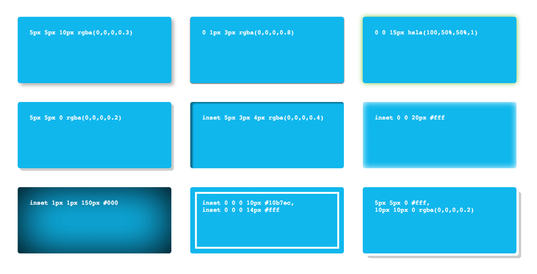
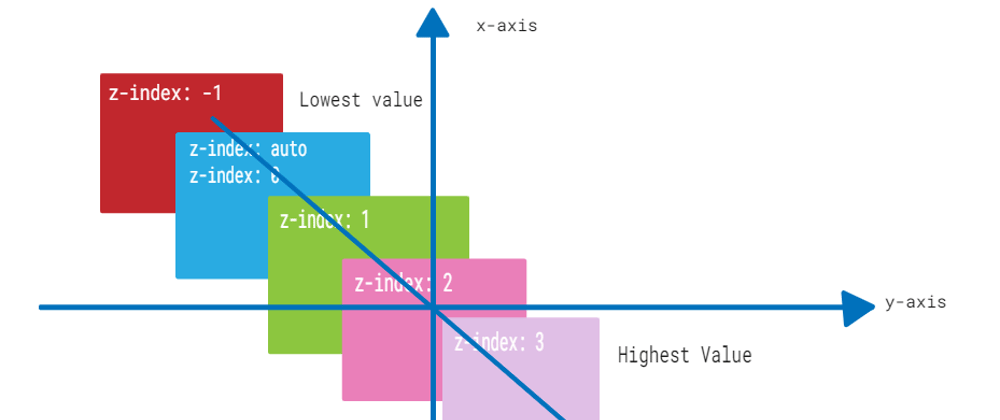

Diseño y Estilos
CSS: Es un lenguaje de hojas utilizado para diseñar y dar formato a páginas web, controlando así la apariencia del HTML, como colores, fuentes, márgenes y diseños responsivos.
JavaScript: Es un lenguaje de programación el cual es utilizado para realizar páginas interactivas, permitiendo manipular el HTML y CSS.

| Atributo | Descripción | Valores Posibles | Ejemplo de Uso | Imagen Representativa | Fuente de Información |
|---|---|---|---|---|---|
| font-size | Define el tamaño de la fuente. | px, em, rem, %, vw | font-size: 16px; |
 |
MDN |
| border-radius | Redondea las esquinas de los elementos. | px, %, em | border-radius: 10px; |
 |
MDN |
| display | Especifica cómo se debe mostrar un elemento. | block, inline, flex, grid | display: flex; |
 |
MDN |
| position | Determina la posición de un elemento en la página. | static, relative, absolute, fixed | position: absolute; |
 |
MDN |
| box-shadow | Añade sombras a los elementos. | Valores de desplazamiento, radio de desenfoque, color | box-shadow: 5px 5px 10px gray; |
 | MDN |
| overflow | Controla el desbordamiento del contenido. | visible, hidden, scroll, auto | overflow: hidden; |
 |
MDN |
| z-index | Define la superposición de los elementos. | Número entero positivo o negativo | z-index: 10; |
 | MDN |
| opacity | Define la opacidad del elemento. | Valores de 0 a 1 | opacity: 0.5; |
MDN | |
| margin padding | Establecen el espacio exterior e interior del elemento. | px, %, em, auto | margin: 20px; padding: 10px; |
 |
MDN |
| text-align | Alinea el texto dentro de un elemento. | left, right, center, justify | text-align: center; |
MDN | |
| visibility | Determina si un elemento es visible o no. | visible, hidden, collapse | visibility: hidden; |
MDN |